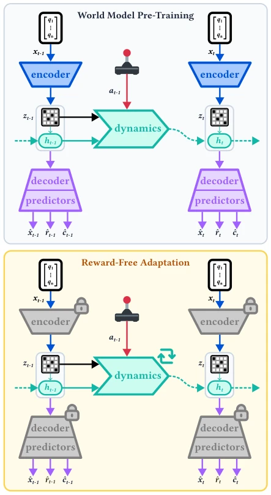

This paper devises a "reward-free" adaptive scheme for space robots, attempting to address the pain point of being unable to calculate rewards after hardware damage. The authors embed rewards within the latent space of the world model, modifying only dynamic parameters without touching the reward head. The idea is attractive, given there is no GPS and no external scoring in space. However, the experimental results are somewhat "harsh"; performance recovers initially but collapses later, indicating the frozen reward head cannot withstand long-term dynamic drift. Although the problem of "unobservable rewards" is resolved, stability remains a critical flaw. Nevertheless, the ability to continue learning without external feedback is superior to RL algorithms that can only exist in perfect simulations, at least opening a pathway for autonomy in extreme environments, even if this opening is somewhat forced.
Long-term tasks for space robots face hardware degradation, such as Mars rover wheel wear [3]. Traditional reinforcement learning relies on reward signals, but space lacks external tracking, making precise reward calculation impossible [5]. While continuous reinforcement learning can adapt online [4], it is similarly constrained by unobservable rewards. Existing model-based methods [8] mostly still rely on manually designed rewards. This results in zero-shot policy failure, while training from scratch consumes excessive bandwidth. This paper aims to address the problem of continuous adaptation without rewards, utilizing the latent space reward structure of a pre-trained world model to update the policy without new reward signals, achieving true resilient autonomy.

Figure 2: The world model is pre-trained in simulation. Once deployed, only the transition dynamics are updated via rollouts.
The framework is divided into two stages: pre-training and online adaptation. Pre-training is based on the DreamerV3 architecture [8], training the world model in simulation via domain randomization to encode reward structures in the latent space. During online adaptation, the encoder, decoder, and reward predictor are frozen, updating only the sequence model and forward dynamics (transition dynamics). New states are collected through unsupervised rollouts, optimizing dynamic parameters using KL divergence and injecting Gaussian noise for exploration. The policy network is trained entirely on imagined trajectories generated by the updated model, without contacting real rewards. This design preserves the pre-trained reward prior while correcting physical dynamic biases, achieving reward-free adaptation.
Tested on three space tasks: planetary crossing, orbit navigation, and screw assembly, all simulating severe hardware faults. Compared against zero-shot, training from scratch, privileged reward, and the proposed method. Results show zero-shot crashes directly, while privileged reward recovers quickly. The proposed method shows initial performance recovery, proving latent space rewards are effective, but later exhibits fluctuations and decay, being less stable than privileged reward. This indicates the frozen reward head has capacity limitations under long-term dynamic changes. Experiments were conducted in simulation, without verifying Sim-to-Real, and online computational overhead is high, but it validates the feasibility of reward-free adaptation.